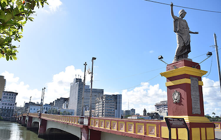
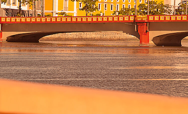
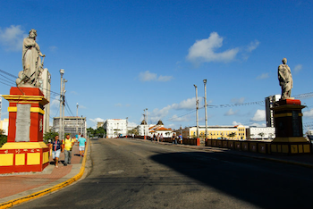
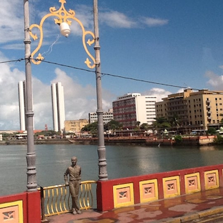
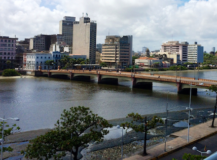
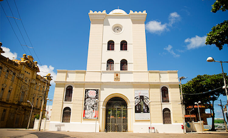
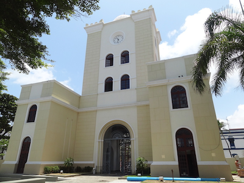
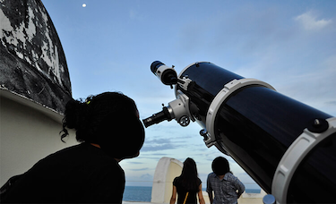
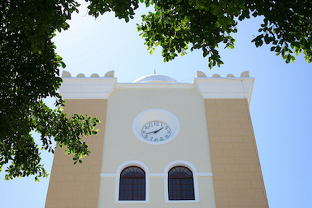

Passeios Turísticos em Recife/PE
Você já conheceu outros pontos turísticos da Recife Antiga?
Recife Antiga é um bairro histórico da cidade de Recife, localizado na região central, às margens do Rio Capibaribe. Alguns dos lugares turísticos mais famosos da área incluem:
Ponte Maurício de Nassau
Ponte Maurício de Nassau é uma ponte histórica construída no século XVII. A ponte é um dos cartões-postais de Recife e oferece uma bela vista do Rio Capibaribe.
|  |  |  |
|  |  |
Torre Malakoff
Torre Malakoff é um antigo observatório construído no século XIX. A torre oferece uma vista panorâmica do bairro e do rio.
|  |  |
|  |  |